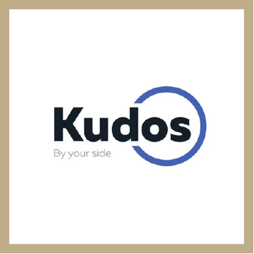
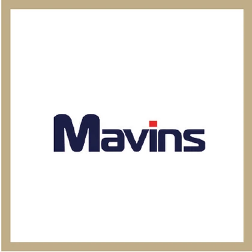
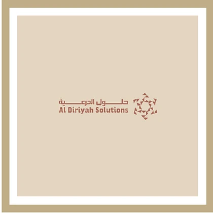

أن نجعل إدارة التكاليف الاستراتيجية ميزة نمو عملية للشركات في المنطقة.
تهدف Growxcel إلى استبدال خفض التكاليف التفاعلي بأنظمة تشغيل تجعل النمو الربحي مرئيًا وقابلًا للقياس ومستدامًا.
الأولى والأكثر تخصصًا في مصر والشرق الأوسط
تأسست Growxcel في مصر عام 2017 على قناعة واحدة: يجب أن تكون إدارة التكاليف أداة استراتيجية للنمو، لا مجرد إجراء امتثال. ومنذ ذلك الحين، ترجمنا هذه القناعة إلى أنظمة عملية لأكثر من 120 شركة في مصر والسعودية والإمارات.
لماذا وُجدت Growxcel
تهدف Growxcel إلى استبدال خفض التكاليف التفاعلي بأنظمة تشغيل تجعل النمو الربحي مرئيًا وقابلًا للقياس ومستدامًا.
ينقل كل مشروع القدرة إلى فريق العميل، ويربط الرؤية المالية بالقرارات التشغيلية اليومية.

بقيادة الدكتورة رباب مصطفى
معظم استشاري التكلفة يخبرونك بما هو خاطئ. الدكتورة رباب تبني أنظمة تبقى — ويستطيع فريقك تشغيلها فعليًا. وبخبرة تتجاوز 30 عامًا في إدارة التكاليف الاستراتيجية والمحاسبة الإدارية، يترجم عملها العمق المالي إلى تحكم تشغيلي عملي.
قضت مسيرتها المهنية عند تقاطع المالية والعمليات — تعمل مباشرة داخل الشركات، عدم وجود مسافة استشارية. يعكس كل مشروع لدى Growxcel هذه الفلسفة: في الموقع، ومندمج، ومسؤول عن النتائج.
in عرض الملف الشخصي على لينكدينالكثير من الاستشاريين سيقدمون لك تقريرًا. تمنحك Growxcel نظامًا فعليّا وعمليّا — يُبنى جنبًا إلى جنب مع فريقك، داخل عملياتك الفعلية، ومتصلًا بنظام ERP لديك، ومصممًا ليدوم بعد انتهاء المشروع.
يُنفَّذ كل مشروع في موقع عملك. نعمل داخل بيئتك، جنبًا إلى جنب مع فريقك، لفهم ما لا تلتقطه البيانات.
لا نسلّمك ملف PDF ونرحل. ننفّذ نظام إدارة تكاليف يستطيع فريقا المالية والعمليات لديك تشغيله باستقلالية.
كل نموذج تكلفة نبنيه متكامل مع استثمارك الحالي في ERP — سواء كان SAP أو Oracle أو Odoo أو Microsoft Dynamics 365 أو غيرها.
يحمل مستشارونا درجات الدكتوراه والماجستير و DBA و MBA و CMA. الخبرة وراء كل مشروع عميقة ومبنية على أساس أكاديمي.
أساسا باللغة العربية والإنجليزية في مصر والسعودية والإمارات — بفهم ثقافي عميق في الأسواق الثلاثة.
مؤهلات فريقنا
يجمع فريق Growxcel بين المؤهلات الأكاديمية الرسمية وسنوات من خبرة التنفيذ الميداني في شركات حقيقية.
يحمل كبار مستشارونا درجات دكتوراه في المحاسبة والإدارة المالية والعمليات — ما يمنح كل نظام تكلفة نصممه دقة بحثية.
مؤهلات قيادة أعمال عملية مقترنة بتفكير استراتيجي — لضمان أن توصياتنا تعمل على مستوى الشركة، لا نظريًا فقط.
شهادة مهنية عالمية في المحاسبة الإدارية والتخطيط المالي وإدارة الأداء — التخصص الدقيق الذي تعمل فيه Growxcel.
إعداد أكاديمي متقدم في المحاسبة والإدارة والتخصصات ذات الصلة يدعم التشخيص الدقيق وتصميم الأنظمة.
خبرة إدارة استراتيجية تضمن أن كل نظام تكلفة ننفّذه يخدم استراتيجية العمل الأوسع، لا مجرد الامتثال المحاسبي.
خبرة تنفيذ عملية عبر منصات ERP الرئيسية المستخدمة في بيئات الأعمال في مصر والسعودية والإمارات.
فريق القيادة
يحدد الملف التعريفي المُقدَّم فريق قيادة من خمسة أشخاص يغطي التوجيه التنفيذي والاستراتيجية والعمليات والتنفيذ.
المؤسِّسة والرئيس التنفيذي
شريك ومدير الاستراتيجية
مدير العمليات
نائب الرئيس التنفيذي
نائب الرئيس التنفيذي
التحالفات الاستراتيجية
تربط شبكة الشركاء المُقدَّمة من Growxcel قدرات متخصصة في المملكة المتحدة والولايات المتحدة بدعم تجاري وقانوني في السعودية.

المملكة المتحدة
الولايات المتحدة
السعودية السعودية
السعوديةقصتنا
تأسست Growxcel بمهمة واضحة: أن تكون الشركة الأكثر تخصصًا في إدارة التكاليف في المنطقة. وتدعم هذه المهمة اليوم شركات في ثلاث دول وستة قطاعات أساسية.
بدأت Growxcel عملها في مصر بتركيز مخصص على إدارة التكاليف الاستراتيجية والتشغيلية.
شكّلت مشاريع في الأغذية والمشروبات والتجزئة والصناعة والطب والخدمات والطيران نهج تنفيذ واعيًا بخصوصية كل قطاع.
بدأت Growxcel خدمة عملاء في السعودية؛ ويُفتتح مكتب الرياض في أبراج العليا عام 2024 لدعم التنفيذ في الموقع وفهم السوق المحلي.
نوسّع منهجيتنا الأساسية بالاعتماد على تسعير الخدمات، واقتصاديات المسارات، وأنظمة الإنتاج، وضوابط الفروع.
تربط خبرتنا في SAP و Oracle و Odoo و Microsoft Dynamics 365 وغيرها هيكلة التكاليف بالأنظمة التي يستخدمها الفريق بالفعل.
يسجل أحدث ملف تعريفي مُقدَّم من Growxcel نموًا في الأعمال بمقدار أربعة أضعاف ومحفظة تمتد عبر ثلاث دول.
ما حققه الفريق
قُدِّمت كملخصات نتائج لأن صياغة الشهادات لم تكن ضمن المواد المُقدَّمة من العميل.
أنتج تسعير الخدمات الطبية، وتنويع العملاء، وتكامل SAP نموًا ملموسًا في الأرباح.
خفّضت اقتصاديات المسارات، وضوابط القوى العاملة، وإدارة تسريب النقد تكلفة اللوجستيات بينما نما الربح على إيرادات مستقرة.
حسّن تسعير الإنتاج المتصل بـOracle عبر 18 خط تصنيع الرؤية، وتحاليل دقيقة، والربحية.
اعمل مع الفريق
سنحدد الفجوة بين إيراداتك وهامش ربحك — ونُريك كيف تنطبق معادلة Growxcel على عملك تحديدًا. لا التزام مطلوب في اللقاء الأول.
أخبرنا عن عملك
شخّص المشكلة
اختر ما يؤلمك أكثر.
النطاق
يساعدنا هذا على فهم مدى تعقيد هيكل عملك.
اقتربنا من الانتهاء
تساعدنا إجاباتك على إعداد تشخيص مركّز بدلًا من كتيّب عام.
أمر أخير
إجابة صادقة تساعدنا في ترتيب أولوية تواصلنا معك.
يجب أن يكون تطبيق البريد الإلكتروني قد فُتح الآن مع تجهيز إجاباتك. أرسل تلك الرسالة لإكمال طلبك، أو استخدم واتساب أدناه.
راسلنا على واتساب